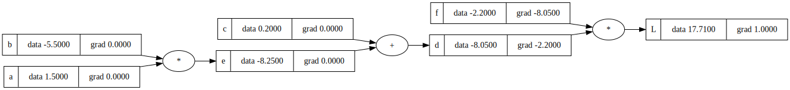
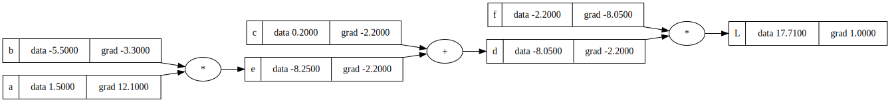
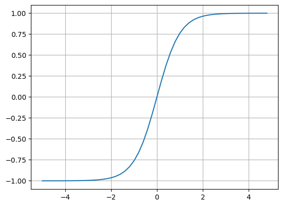
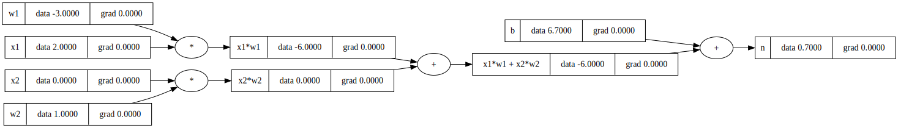
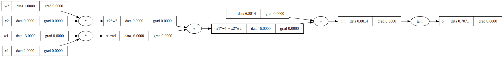
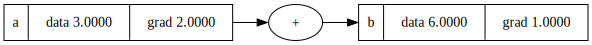
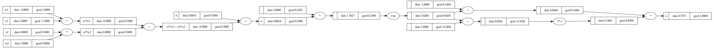
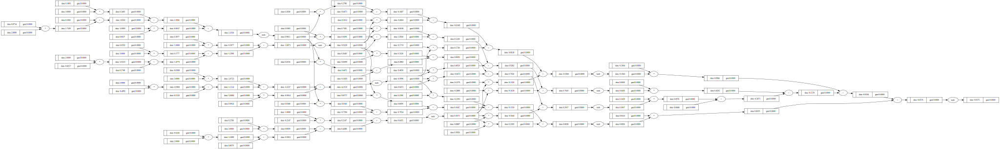

class Value:
def __init__(self,data,_children=(),_op='',label=''): #the data is the value, we need children to store the children passed into functions like add and mult, and op to show the operations that came up with those children.
self.data = data
self.grad = 0 # the derivative of L with respect to this value
self._prev = set(_children)
self._op = _op
self.label = label
def __repr__(self):
return f"Value(data={self.data})"
def __add__(self,other):
out = Value(self.data + other.data, (self,other),"+")
return out
def __mul__(self,other):
out = Value(self.data * other.data, (self,other),"*")
return outMakemore is a model that will make… more, of what you are inputing. This is following a tutorial from Andrej Karpathy.
a = Value(1.5,label='a')
b = Value(-5.5,label='b')
c = Value(0.2,label='c')
a*b,a+b(Value(data=-8.25), Value(data=-4.0))e = a*b; e.label = 'e'
d = e+c; d.label = 'd'
f = Value(-2.2,label='f')
L = d*f; L.label = 'L' # the loss function Ld._prev{Value(data=-8.25), Value(data=0.2)}d._op'+'Now we want a way to visualize the tree, since there will eventually be many values in the tree.
from graphviz import Digraph
def trace(root):
# builds a set of all nodes and edges in a graph
nodes, edges = set(), set()
def build(v):
if v not in nodes:
nodes.add(v)
for child in v._prev:
edges.add((child, v))
build(child)
build(root)
return nodes, edges
def draw_dot(root):
dot = Digraph(format='svg', graph_attr={'rankdir': 'LR'}) # LR = left to right
nodes, edges = trace(root)
for n in nodes:
uid = str(id(n))
# for any value in the graph, create a rectangular ('record') node for it
dot.node(name = uid, label = "{ %s | data %.4f | grad %.4f}" % (n.label, n.data, n.grad), shape='record')
if n._op:
# if this value is a result of some operation, create an op node for it
dot.node(name = uid + n._op, label = n._op)
# and connect this node to it
dot.edge(uid + n._op, uid)
for n1, n2 in edges:
# connect n1 to the op node of n2
dot.edge(str(id(n1)), str(id(n2)) + n2._op)
return dotdraw_dot(L)
# manual backprop
def lol():
# the reason this is in a function is because they will be local to this function and therefore not mess up the global scope
h = 0.001
a = Value(1.5,label='a')
b = Value(-5.5,label='b')
c = Value(0.2,label='c')
e = a*b; e.label = 'e'
d = e+c; d.label = 'd'
f = Value(-2.2,label='f')
L = d*f; L.label = 'L' # the loss function L
L1 = L.data
a = Value(1.5,label='a')
b = Value(-5.5,label='b')
c = Value(0.2,label='c')
e = a*b; e.label = 'e'
d = e+c; d.label = 'd'
f = Value(-2.2,label='f')
L = d*f; L.label = 'L' # the loss function L
L2 = L.data + h # the derivate of L with respect to L, since L is increased by h
print((L2 - L1)/h)
lol()1.0000000000012221L.grad = 1L = d * f
dL/dd =? f (the derivate of L with respect to d is f)
Proof:
lim h->0 (f(x+h)-f(x))/h
((d+h) * f - df)/h (df + hf - df)/h (h*f)/h f
d.grad = f.data
f.grad = d.datadraw_dot(L)
dL / dc since we know dL / dd we can get dd / dc and use it to get dL / dc
d = c + e
dd / dc = 1
Proof
(f(x+h) - f(x)) / h ((c+h + e) - (c + e))/h (c+h+e-c-e)/h h/h 1
dd / de = 1 as well
but we need dL / dc we use the chain rule, which is basically: if a car travels twice as fast as a bicycle and the bicycle is four times as fast as a walking man, then the car travels 2x4=8 times as fast as the man. So you multiply
WANT dL / dc KNOW dL/dd and dd/dc
dL / dc = (dL / dd) * (dd / dc) = (dL / dd) * 1 = dL / dd
c.grad = d.grad
e.grad = d.graddL / da = (dL / de) * (de / da)
de / da? de / da = b
dL / da = dL / de * b
a.grad = e.grad * b.data
b.grad = e.grad * a.datadraw_dot(L)
# to try and make L go up, we just have to go in the direction of the gradient
a.data += 0.01 * a.grad
b.data += 0.01 * b.grad
c.data += 0.01 * c.grad
d.data += 0.01 * d.grad
e = a * b
d = e + c
L = d * f
print(L.data)19.3401846It worked! Now we will do an example with a neuron
Here is the activation function:
from matplotlib import pyplot as plt
import numpy as np
plt.plot(np.arange(-5,5,.2), np.tanh(np.arange(-5,5,0.2))); plt.grid()
#inputs x1,x2
x1 = Value(2.0,label='x1')
x2 = Value(0.0,label='x2')
# weights w1,w2
w1 = Value(-3, label='w1')
w2 = Value(1,label='w2')
# bias of the neuron
b = Value(6.7, label='b')
#x1*w1 + x2*w2+b
x1w1 = x1*w1; x1w1.label = 'x1*w1'
x2w2 = x2*w2; x2w2.label = 'x2*w2'
x1w1x2w2 = x1w1 + x2w2; x1w1x2w2.label = 'x1*w1 + x2*w2'
n = x1w1x2w2 + b; n.label = 'n'
draw_dot(n)
import math
# in order to do the activation function tanh, we need to update Value
class Value:
def __init__(self,data,_children=(),_op='',label=''): #the data is the value, we need children to store the children passed into functions like add and mult, and op to show the operations that came up with those children.
self.data = data
self.grad = 0 # the derivative of L with respect to this value
self._prev = set(_children)
self._op = _op
self.label = label
def __repr__(self):
return f"Value(data={self.data})"
def __add__(self,other):
out = Value(self.data + other.data, (self,other),"+")
return out
def __mul__(self,other):
out = Value(self.data * other.data, (self,other),"*")
return out
def tanh(self):
x = self.data
t = (math.exp(2*x)-1)/(math.exp(2*x) + 1)
out = Value(t,(self, ), 'tanh')
return out#inputs x1,x2
x1 = Value(2.0,label='x1')
x2 = Value(0.0,label='x2')
# weights w1,w2
w1 = Value(-3, label='w1')
w2 = Value(1,label='w2')
# bias of the neuron
b = Value(6.8813735870195432, label='b')
#x1*w1 + x2*w2+b
x1w1 = x1*w1; x1w1.label = 'x1*w1'
x2w2 = x2*w2; x2w2.label = 'x2*w2'
x1w1x2w2 = x1w1 + x2w2; x1w1x2w2.label = 'x1*w1 + x2*w2'
n = x1w1x2w2 + b; n.label = 'n'
o = n.tanh(); o.label = 'o'
draw_dot(o)
o.grad = 1
# o = tanh(n)
# do/dn = 1 - tanh(n)**2
# do/dn = 1 - o**2
n.grad = 1 - o.data**2draw_dot(o)x1w1x2w2.grad = n.grad
b.grad = n.gradx1w1.grad = x1w1x2w2.grad
x2w2.grad = x1w1x2w2.gradx2.grad = w2.data * x2w2.grad
w2.grad = x2.data * x2w2.grad
x1.grad = w1.data * x1w1.grad
w1.grad = x1.data * x1w1.graddraw_dot(o)# now to do the backpropogation
class Value:
def __init__(self,data,_children=(),_op='',label=''): #the data is the value, we need children to store the children passed into functions like add and mult, and op to show the operations that came up with those children.
self.data = data
self.grad = 0 # the derivative of L with respect to this value
self._backward = lambda: None # NEW
self._prev = set(_children)
self._op = _op
self.label = label
def __repr__(self):
return f"Value(data={self.data})"
def __add__(self,other):
out = Value(self.data + other.data, (self,other),"+")
def _backward():
self.grad += 1.0 * out.grad
other.grad += 1.0 * out.grad
out._backward = _backward
return out
def __mul__(self,other):
out = Value(self.data * other.data, (self,other),"*")
def _backward():
self.grad += out.data * other.grad
other.grad += out.data * self.grad
out._backward = _backward
return out
def tanh(self):
x = self.data
t = (math.exp(2*x)-1)/(math.exp(2*x) + 1)
out = Value(t,(self, ), 'tanh')
def _backward():
self.grad = (1 - t**2) * out.grad
out._backward = _backward
return out
def backward(self):
topo = []
visited = set()
def build_topo(v):
if v not in visited:
visited.add(v)
for child in v._prev:
build_topo(child)
topo.append(v)
build_topo(o)
self.grad = 1.0
for node in reversed(topo):
node._backward()# inputs x1,x2
x1 = Value(2.0, label='x1')
x2 = Value(0.0, label='x2')
# weights w1,w2
w1 = Value(-3.0, label='w1')
w2 = Value(1.0, label='w2')
# bias of the neuron
b = Value(6.8813735870195432, label='b')
# x1*w1 + x2*w2 + b
x1w1 = x1*w1; x1w1.label = 'x1*w1'
x2w2 = x2*w2; x2w2.label = 'x2*w2'
x1w1x2w2 = x1w1 + x2w2; x1w1x2w2.label = 'x1*w1 + x2*w2'
n = x1w1x2w2 + b; n.label = 'n'
o = n.tanh(); o.label = 'o'o.grad = 1.0 # so that multiplication does not multiply by 0
o._backward()draw_dot(o)n._backward()
n._backward()
b._backward() #none
x1w1x2w2._backward()
x1w1._backward()
x2w2._backward()
draw_dot(o)# do topological sort
topo = []
visited = set()
def build_topo(v):
if v not in visited:
visited.add(v)
for child in v._prev:
build_topo(child)
topo.append(v)
build_topo(o)
topo[Value(data=6.881373587019543),
Value(data=-3.0),
Value(data=2.0),
Value(data=-6.0),
Value(data=0.0),
Value(data=1.0),
Value(data=0.0),
Value(data=-6.0),
Value(data=0.8813735870195432),
Value(data=0.7071067811865476)]o.grad = 1.0
topo = []
visited = set()
def build_topo(v):
if v not in visited:
visited.add(v)
for child in v._prev:
build_topo(child)
topo.append(v)
build_topo(o)
for node in reversed(topo):
node._backward()o.backward()draw_dot(o)SyntaxError: invalid decimal literal (2324353414.py, line 1)class Value:
def __init__(self, data, _children=(), _op='', label=''):
self.data = data
self.grad = 0.0
self._backward = lambda: None
self._prev = set(_children)
self._op = _op
self.label = label
def __repr__(self):
return f"Value(data={self.data})"
def __add__(self, other):
out = Value(self.data + other.data, (self, other), '+')
def _backward():
self.grad += 1.0 * out.grad
other.grad += 1.0 * out.grad
out._backward = _backward
return out
def __mul__(self, other):
out = Value(self.data * other.data, (self, other), '*')
def _backward():
self.grad += other.data * out.grad
other.grad += self.data * out.grad
out._backward = _backward
return out
def tanh(self):
x = self.data
t = (math.exp(2*x) - 1)/(math.exp(2*x) + 1)
out = Value(t, (self, ), 'tanh')
def _backward():
self.grad += (1 - t**2) * out.grad
out._backward = _backward
return out
def backward(self):
topo = []
visited = set()
def build_topo(v):
if v not in visited:
visited.add(v)
for child in v._prev:
build_topo(child)
topo.append(v)
build_topo(self)
self.grad = 1.0
for node in reversed(topo):
node._backward()# inputs x1,x2
x1 = Value(2.0, label='x1')
x2 = Value(0.0, label='x2')
# weights w1,w2
w1 = Value(-3.0, label='w1')
w2 = Value(1.0, label='w2')
# bias of the neuron
b = Value(6.8813735870195432, label='b')
# x1*w1 + x2*w2 + b
x1w1 = x1*w1; x1w1.label = 'x1*w1'
x2w2 = x2*w2; x2w2.label = 'x2*w2'
x1w1x2w2 = x1w1 + x2w2; x1w1x2w2.label = 'x1*w1 + x2*w2'
n = x1w1x2w2 + b; n.label = 'n'
o = n.tanh(); o.label = 'o'
o.backward()
draw_dot(o)a = Value(3,label='a')
b = a + a; b.label = 'b' # make the gradients do += rather than = so it doesn't override
b.backward()
draw_dot(b)
class Value:
def __init__(self, data, _children=(), _op='', label=''):
self.data = data
self.grad = 0.0
self._backward = lambda: None
self._prev = set(_children)
self._op = _op
self.label = label
def __repr__(self):
return f"Value(data={self.data})"
def __add__(self, other):
other = other if isinstance(other, Value) else Value(other)
out = Value(self.data + other.data, (self, other), '+')
def _backward():
self.grad += 1.0 * out.grad
other.grad += 1.0 * out.grad
out._backward = _backward
return out
def __mul__(self, other):
other = other if isinstance(other, Value) else Value(other)
out = Value(self.data * other.data, (self, other), '*')
def _backward():
self.grad += other.data * out.grad
other.grad += self.data * out.grad
out._backward = _backward
return out
def __pow__(self, other):
assert isinstance(other, (int, float)), "only supporting int/float powers for now"
out = Value(self.data**other, (self,), f'**{other}')
def _backward():
self.grad += other * (self.data ** (other - 1)) * out.grad
out._backward = _backward
return out
def __rmul__(self, other): # other * self
return self * other
def __truediv__(self, other): # self / other
return self * other**-1
def __neg__(self): # -self
return self * -1
def __sub__(self, other): # self - other
return self + (-other)
def __radd__(self, other): # other + self
return self + other
def tanh(self):
x = self.data
t = (math.exp(2*x) - 1)/(math.exp(2*x) + 1)
out = Value(t, (self, ), 'tanh')
def _backward():
self.grad += (1 - t**2) * out.grad
out._backward = _backward
return out
def exp(self):
x = self.data
out = Value(math.exp(x), (self, ), 'exp')
def _backward():
self.grad += out.data * out.grad # NOTE: in the video I incorrectly used = instead of +=. Fixed here.
out._backward = _backward
return out
def backward(self):
topo = []
visited = set()
def build_topo(v):
if v not in visited:
visited.add(v)
for child in v._prev:
build_topo(child)
topo.append(v)
build_topo(self)
self.grad = 1.0
for node in reversed(topo):
node._backward()a = Value(2)
b = Value(4)
a/bValue(data=0.5)# now with tanh broken up
# inputs x1,x2
x1 = Value(2.0, label='x1')
x2 = Value(0.0, label='x2')
# weights w1,w2
w1 = Value(-3.0, label='w1')
w2 = Value(1.0, label='w2')
# bias of the neuron
b = Value(6.8813735870195432, label='b')
# x1*w1 + x2*w2 + b
x1w1 = x1*w1; x1w1.label = 'x1*w1'
x2w2 = x2*w2; x2w2.label = 'x2*w2'
x1w1x2w2 = x1w1 + x2w2; x1w1x2w2.label = 'x1*w1 + x2*w2'
n = x1w1x2w2 + b; n.label = 'n'
# ______
e = (2*n).exp()
o = (e - 1)/(e + 1)
# _______
o.label = 'o'
o.backward()
draw_dot(o)
# same thing in PyTorch
import torch
x1 = torch.Tensor([2.0]).double() ; x1.requires_grad = True
x2 = torch.Tensor([0.0]).double() ; x2.requires_grad = True
w1 = torch.Tensor([-3.0]).double() ; w1.requires_grad = True
w2 = torch.Tensor([1.0]).double() ; w2.requires_grad = True
b = torch.Tensor([6.8813735870195432]).double() ; b.requires_grad = True
n = x1*w1 + x2*w2 + b
o = torch.tanh(n)
print(o.data.item())
o.backward()
print('---')
print('x2', x2.grad.item())
print('w2', w2.grad.item())
print('x1', x1.grad.item())
print('w1', w1.grad.item())
0.7071066904050358
---
x2 0.5000001283844369
w2 0.0
x1 -1.5000003851533106
w1 1.0000002567688737import random# Building a MLP
class Neuron:
def __init__(self,nin):
self.w = [Value(random.uniform(-1,1)) for _ in range(nin)]
self.b = Value(random.uniform(-1,1))
def __call__(self,x):
# w * x + b
# forward pass
act = sum((wi*xi for wi,xi in zip(self.w, x)),self.b) # pair up ws with xs
out = act.tanh()
return out
x = [2,3]
n = Neuron(2)
n(x)Value(data=-0.5278816907307129)class Layer:
def __init__(self, nin, nout,):
self.neurons = [Neuron(nin) for _ in range(nout)]
def __call__(self, x):
outs = [n(x) for n in self.neurons]
return outs[0] if len(outs) == 1 else outs
x = [2,3]
n = Layer(2,3)
n(x)[Value(data=0.962111430039211),
Value(data=-0.9934650406307376),
Value(data=0.3439500937888263)]class MLP():
def __init__(self, nin, nouts):
sz = [nin] + nouts
self.layers = [Layer(sz[i], sz[i+1]) for i in range(len(nouts))]
def __call__(self, x):
for layer in self.layers:
x = layer(x)
return x
x = [2,3,-1]
n = MLP(3,[4,4,1])
n(x)Value(data=-0.057515384626523336)draw_dot(n(x))
xs = [
[2.0, 3.0, -1.0],
[3.0, -1.0, 0.5],
[0.5, 1.0, 1.0],
[1.0, 1.0, -1.0],
]
ys = [1.0, -1.0, -1.0, 1.0] # desired targets
ypred = [n(x) for x in xs]
ypred[Value(data=-0.057515384626523336),
Value(data=0.21031897880739908),
Value(data=-0.23716642272134442),
Value(data=-0.17695136227658856)]loss = sum([(yout - ygt)**2 for ygt, yout in zip(ys,ypred)])
lossValue(data=4.550340394971638)loss.backward()n.layers[0].neurons[0].w[0].grad-0.23088023006144023#draw_dot(loss)